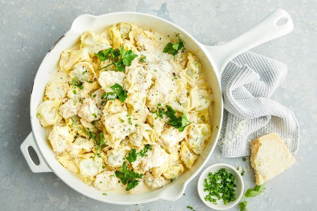

Chicken Alfredo

Description
A Bowl of creamy chicken alfredo topped with herbs and cheese
Ingredients
- 1 tbsp olive oil
- 1 brown onion finley chopped
- 2 crushed garlic cloves
- 2 tsp fresh thyme leaves
- 500g chicken breast fillets cut into 2cm pieces
- 300ml thickend cream
- 650g ricotta and spinahc tortellini
- 1 green shallot trimmed and thinly sliced
- 60g finley grated parmesan
- 1/4 cup fresh parlsey leaves
- 2 tbsp finley choped fresh chives
Method
- Heat oil in frypan over medium-high heat
- Add onion and garlic, stir often untill softend
- Add thyme and chicken, cook untill chicken is light golden
- Add 180ml water then cream to pan nad bring to boil
- Add Tortellini and simmer, stiring ocasionally untill mixture is thickend and tortellini is tender
- season to taste and stir in shallot, cheese, parsley and chives
- serve pasta topped with remaining cheese and herbs